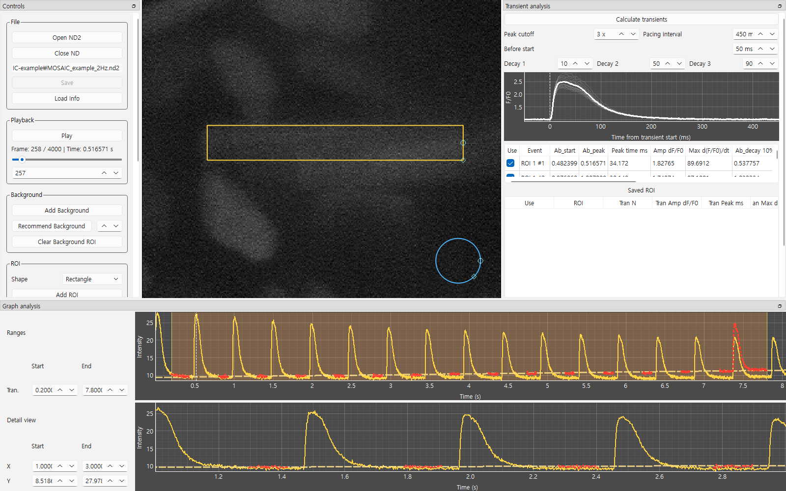

MOSAIC
Multi-ROI Optical System for Analysis of Intracellular Calcium
버전 0.2.0
Version 0.2.0
MOSAIC은 Nikon ND2 형식의 고속 형광 영상에서 심근세포의 Ca²⁺ 전이(transient)를 분석하는 데스크톱 프로그램입니다. 한 시야 안의 여러 세포 또는 세포 내 영역에 ROI를 설정하고, 박동마다 진폭, time to peak, 최대 상승 속도, 10·50·90% 감쇠 시간을 계산하여 Excel 파일로 저장합니다. Windows와 macOS에서 동작하며 Python 3.10 이상이 필요합니다.
MOSAIC is a desktop program for analyzing cardiomyocyte Ca²⁺ transients in high-speed Nikon ND2 fluorescence recordings. ROIs are set on several cells or subcellular regions of one field of view, and for each beat the program calculates amplitude, time to peak, maximum rising rate, and 10/50/90% decay times, which are saved as Excel files. It runs on Windows and macOS and requires Python 3.10 or later.

1다운로드Downloads
| 항목Item | 내용Description | 형식 · 크기Format · size | 받기Get |
|---|---|---|---|
| MOSAIC v0.2.0 | 프로그램 전체 (Windows·macOS 공용)Complete program (Windows and macOS) | ZIP · 79 KB | ZIP |
예제 파일Example recordingMOSAIC_example_2Hz.nd2 |
설명서 3장에서 사용. 2 Hz 자극 심근세포, 288 × 240 px, 8-bit, 4,000 프레임(2.01 ms 간격, 8.04 s). 원본 기록에서 픽셀과 시간 정보를 그대로 잘라낸 파일.Used in chapter 3 of the guide. Cardiomyocytes paced at 2 Hz, 288 × 240 px, 8-bit, 4,000 frames (2.01-ms interval, 8.04 s), cropped from an original recording with pixels and timestamps unchanged. | ND2 · 295 MB | 요청 시 제공Upon request |
| 테스트 원본 기록Full test recordings | 26831_020.nd2 600 × 600 px, 12,406 frames, 24.9 s26831_021.nd2 600 × 600 px, 14,911 frames, 30.0 s |
ND2 · 4.5 GB ND2 · 5.4 GB |
요청 시 제공Upon request |
| 소스 코드Source code | GitHub 저장소 (변경 기록, 문제 신고, Markdown 설명서)GitHub repository (change history, issue tracker, Markdown guide) | GitHub | GitHub |
프로그램과 소스 코드는 공개되어 있습니다. ND2 기록 파일(예제 파일, 테스트 원본 기록)은 요청 시 제공합니다. GitHub Issues로 요청하거나 교신저자에게 문의하십시오.
The program and source code are publicly available. ND2 recordings (the example recording and full test recordings) are available upon request; request them through GitHub Issues or contact the corresponding author.
2사용 설명서User guides
한국어판과 영어판은 내용과 절 번호가 같습니다. 각 설명서 상단의 언어 표시를 누르면 같은 절의 다른 언어판으로 이동합니다.
The Korean and English editions have the same content and section numbers. The language link at the top of each guide opens the same section in the other edition.
| 설명서Guide | 구성Contents |
|---|---|
| 한국어 설명서 | 1 설치와 실행 · 2 처음 보는 화면 · 3 예제로 따라하기(12단계) · 4 버튼 사전 · 5 설정값 고르는 법 · 6 결과 파일 · 7 알려진 제약 · 8 문제 해결 · 9 용어 풀이 |
| English guide | 1 Install and launch · 2 The window at a glance · 3 Example walkthrough (12 steps) · 4 Button reference · 5 Choosing settings · 6 Output files · 7 Known limitations · 8 Troubleshooting · 9 Glossary |
3설치 요약Installation in brief
- python.org에서 Python 3.10 이상을 설치합니다. Windows에서는 Add python.exe to PATH를 선택합니다.
- MOSAIC ZIP 파일을 로컬 폴더(예:
C:\MOSAIC)에 압축 해제합니다. Dropbox, OneDrive 등 동기화 폴더는 사용하지 않습니다. run_app.bat(Windows) 또는run_app.command(macOS)를 실행합니다. 첫 실행 시 필요한 패키지가 설치되며 수 분이 걸립니다.- 예제 파일을 요청해 받은 뒤, 설명서 3장 예제로 따라하기에 따라 분석합니다.
- Install Python 3.10 or later from python.org. On Windows, select Add python.exe to PATH.
- Extract the MOSAIC ZIP to a local folder such as
C:\MOSAIC. Do not use synced folders such as Dropbox or OneDrive. - Run
run_app.bat(Windows) orrun_app.command(macOS). The first launch installs the required packages and takes several minutes. - After receiving the example file on request, analyze it following chapter 3, Example walkthrough.
4사용 전 유의사항Before use
Pacing interval 기본값은 2 Hz 자극용 450 ms입니다. 다른 자극 빈도에서는 설명서 5장 설정값 고르는 법에 따라 바꾸십시오. 분석마다 사용한 설정과 MOSAIC 버전을 기록하고, 검출된 박동 수(Tran N)가 실제 박동 수와 맞는지 확인하십시오. 자세한 내용은 7장 알려진 제약을 참조하십시오.
The Pacing interval defaults to 450 ms for 2-Hz pacing. For other pacing rates, change it as described in chapter 5, Choosing settings. Record the settings and MOSAIC version for each analysis, and check that the number of detected beats (Tran N) matches the actual beats. See chapter 7, Known limitations.
5인용 및 문의Citation and contact
연구에 MOSAIC을 사용한 경우 함께 발표되는 논문을 인용하여 주십시오. 인용 정보는 논문 출판 시 게시합니다. 오류 보고와 문의는 GitHub Issues를 이용하십시오.
If MOSAIC is used in research, please cite the accompanying manuscript. Citation details will be posted upon publication. Please report problems or send questions through GitHub Issues.